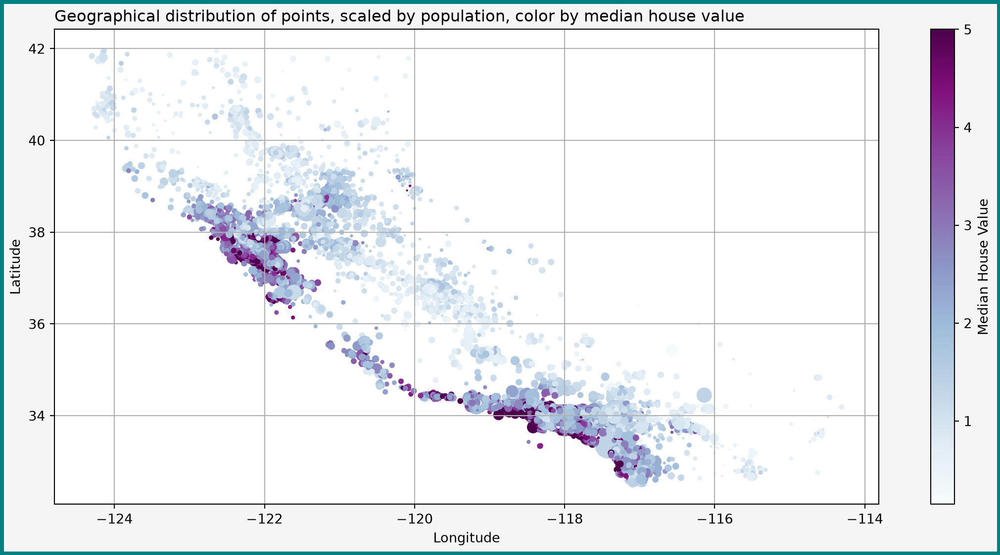
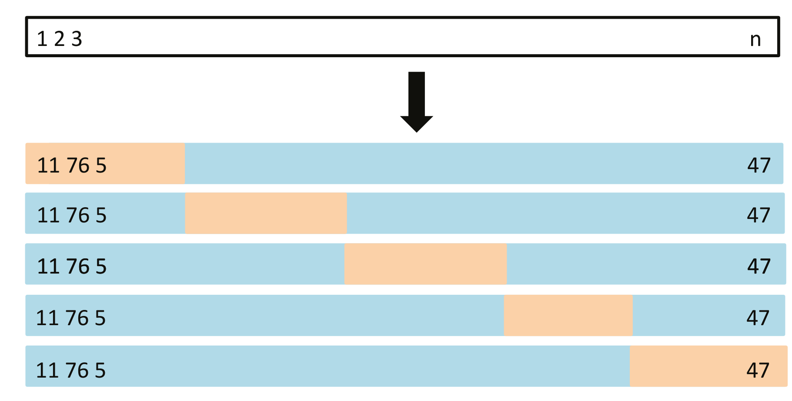
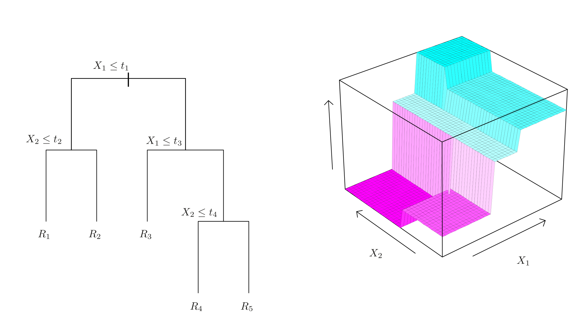

import matplotlib.pyplot as plt
import numpy as np
import pandas as pd
import plotly.express as px
from scipy.stats import randint, uniform
# Deeply copying objects
from sklearn.base import clone
# For composing transformations
from sklearn.compose import ColumnTransformer
from sklearn.pipeline import Pipeline
# Data source
from sklearn.datasets import fetch_california_housing
# Regression random forest
from sklearn.ensemble import RandomForestRegressor
# Linear models
from sklearn.linear_model import (
Lasso,
LinearRegression,
)
# Evaluating predictor quality
from sklearn.metrics import root_mean_squared_error
# For splitting dataset
from sklearn.model_selection import (
cross_val_score,
GridSearchCV,
RandomizedSearchCV,
train_test_split
)
# For preprocessing data
from sklearn.preprocessing import(
FunctionTransformer,
PolynomialFeatures,
StandardScaler
)
# Regression trees
from sklearn.tree import DecisionTreeRegressorRegression II: Model Training and Validation
Bias-variance trade-off, training models, cross-validation
Vladislav Morozov
Introduction
Lecture Info
Learning Outcomes
This lecture — second part of our illustrated regression example
By the end, you should be able to
- Discuss bias-variance trade-off
- Explain how to use cross-validation for model validation (generalization performance, model comparison, tuning parameter choice)
- Use regressor predictors in
scikit-learn
References
- Chapters 3, 5.1, 6-9 in James et al. (2023)
scikit-learnUser Guide: 1.1, 1.10-1.11- Deeper: chapter 3, 9, 15 in Hastie et al. (2009)
Empirical Setup
Reminder: Empirical Problem
Overall empirical goal: (R)MSE-optimal prediction of median house prices in California on the level of reasonably small blocks
Last time
- Load the data
- Some EDA
- Preparation
Imports
Reminder on Data Preparation
Continue with empirical setup from last time:
- California housing data set
- Split 80%/20% into training/test data
- Training set further split into
X_trainandy_train
Loading data
# Load data
data = fetch_california_housing(data_home=data_path, as_frame=True)
data_df = data.frame.copy()
# Split off test test
train_set, test_set = train_test_split(data_df, test_size = 0.2, random_state= 1)
# Separate the Xs and the labels
X_train = train_set.drop("MedHouseVal", axis=1)
y_train = train_set["MedHouseVal"].copy()Reminder: Geographical Representation of Data

Bias-Variance Trade-Off
Current Goal: Picking \(\Hcal\)
So far have
- Risk
- Basic idea of the data
Now need to pick hypothesis class \(\Hcal\)
- Guided by bias-complexity trade-off
- Special related decomposition for MSE — the bias-variance trade-off
Bias-Variance Decomposition: Irreducible Error
Define \(U = Y- \E[Y|\bX]\) and let \(\var(U) = \sigma^2\)
- Then (why?) \[ \E[U|\bX] =0 \]
- \(\sigma^2\) is sometimes called the irreducible error: the risk of the best predictor \(\E[Y|\bX]\) (Bayes risk)
Bias-Variance Decomposition: Statement
Let
- \(S\) be some sample
- \(\hat{h}_S\) be the hypothesis picked by some algorithm
- \(\bX\) be a new point independent of \(S\)
Then \[ \begin{aligned} \hspace{-1cm} \E_S\left[MSE(\hat{h}_S)\right] & = \sigma^2 + \E_{\bX}\left[\var_S(\hat{h}_S(\bX))\right] \\ & \quad + \E_{\bS}\left[\E_{\bX}\left[ (\E[Y|\bX]- \hat{h}_S(\bX))^2 \right]\right] \end{aligned} \]
To show the decomposition, proceed with MSE as before. See the problem set
Bias-Variance Decomposition: Interpretation
\[ \begin{aligned} \hspace{-1cm} \E_S\left[MSE(\hat{h}_S)\right] & = \sigma^2 + \E_{\bX}\left[\var_S(\hat{h}_S(\bX))\right] \\ & \quad + \E_S\left[\E_{\bX}\left[ (\E[Y|\bX]- \hat{h}_S(\bX))^2 \right]\right] \end{aligned} \tag{1}\]
MSE is sum of
- Irreducible error \(\sigma^2\)
- Variance of \(\hat{h}_S(\bX)\)
- Squared bias of \(\hat{h}_S(\bX)\) for Bayes predictor \(\E[Y|\bX]\)
Bias-Variance Decomposition: Discussion
- Note: two layers of expectations
- With respect to sample \(S\): randomness in \(\hat{h}_S\) due to sampling
- With respect to \(\bX\): the new independent point (definition of risk)
Have already seen such expression: exactly the kind of construction in PAC-learning — properties of risk of \(\hat{h}_S\), integrated over sample \(S\)
Bias-Variance Trade-Off
Bias-variance trade-off:
- More complicated \(h(\bx)\) can approximate \(\E[Y|\bX=\bx]\) better
- But complicated \(h(\cdot)\) likely has higher \(\var_S(h(\bx))\): equal changes in \(S\) may lead to larger changes in \(\hat{h}_S(\bx)\)
Bias-complexity trade-off also sometime called bias-variance trade-off by synecdoche. But, strictly speaking, only MSE can be written as \((Bias)^2 + Variance\). Other risks — different components (e.g. MAE involves absolute value of bias and mean absolute deviation)
Linear Regression
Polynomial Hypotheses
Polynomial Hypotheses
Start with familiar linear hypothesis class \[ \Hcal = \curl{h(\bx): \varphi(\bx)'\bbeta: \bbeta\in \R^{\dim(\varphi(\bb))} } \] where
- \(\bbeta\) coefficients
- \(\bx\) — original features
- \(\varphi(\bx)\) — polynomials of some of the original \(\bx\) up to given degree \(k\)
Implementation Approach
Simple to do conveniently and reproducibly with scikit-learn
- Create
Pipelinethat take \(\bx\) and returns \(\varphi(\bx)\) (did that last time) - Attach a learning algorithm that takes \(\varphi(\bx)\) and returns \(\hat{y}\) to the end of the pipeline
Reminder: Preprocessing Pipeline I
Recall what we did:
- Dropped geography
- Create new bedroom share feature
- Created polynomials, including interactions
- Standardized the variables
Creating the pipeline
# Define the ratio transformers
def column_ratio(X):
return X[:, [0]] / X[:, [1]]
def ratio_name(function_transformer, feature_names_in):
return ["ratio"]
divider_transformer = FunctionTransformer(
column_ratio,
validate=True,
feature_names_out = ratio_name)
# Extracting and dropping features
feat_extr_pipe = ColumnTransformer(
[
('bedroom_ratio', divider_transformer, ['AveBedrms', 'AveRooms']),
(
'passthrough',
'passthrough',
[
'MedInc',
'HouseAge',
'AveRooms',
'AveBedrms',
'Population',
'AveOccup',
]
),
('drop', 'drop', ['Longitude', 'Latitude'])
]
)
# Creating polynomials and standardizing
preprocessing = Pipeline(
[
('extraction', feat_extr_pipe),
('poly', PolynomialFeatures(include_bias=False)),
('scale', StandardScaler()),
]
)Reminder: Preprocessing Pipeline II
Pipeline(steps=[('extraction',
ColumnTransformer(transformers=[('bedroom_ratio',
FunctionTransformer(feature_names_out=<function ratio_name at 0x11d1e8720>,
func=<function column_ratio at 0x11cd0ade0>,
validate=True),
['AveBedrms', 'AveRooms']),
('passthrough', 'passthrough',
['MedInc', 'HouseAge',
'AveRooms', 'AveBedrms',
'Population', 'AveOccup']),
('drop', 'drop',
['Longitude', 'Latitude'])])),
('poly', PolynomialFeatures(include_bias=False)),
('scale', StandardScaler())])In a Jupyter environment, please rerun this cell to show the HTML representation or trust the notebook. On GitHub, the HTML representation is unable to render, please try loading this page with nbviewer.org.
Parameters
| steps | [('extraction', ...), ('poly', ...), ...] | |
| transform_input | None | |
| memory | None | |
| verbose | False |
Parameters
| transformers | [('bedroom_ratio', ...), ('passthrough', ...), ...] | |
| remainder | 'drop' | |
| sparse_threshold | 0.3 | |
| n_jobs | None | |
| transformer_weights | None | |
| verbose | False | |
| verbose_feature_names_out | True | |
| force_int_remainder_cols | 'deprecated' |
['AveBedrms', 'AveRooms']
Parameters
| func | <function col...t 0x11cd0ade0> | |
| inverse_func | None | |
| validate | True | |
| accept_sparse | False | |
| check_inverse | True | |
| feature_names_out | <function rat...t 0x11d1e8720> | |
| kw_args | None | |
| inv_kw_args | None |
['MedInc', 'HouseAge', 'AveRooms', 'AveBedrms', 'Population', 'AveOccup']
passthrough
['Longitude', 'Latitude']
drop
Parameters
| degree | 2 | |
| interaction_only | False | |
| include_bias | False | |
| order | 'C' |
Parameters
| copy | True | |
| with_mean | True | |
| with_std | True |
OLS
OLS: LinearRegression
- Simplest learning algorithm — OLS
- Implemented as
LinearRegression()insklearn.linear_model
- Plan
- First talk about predictors in isolation
- Then attach to our pipeline
Predictors in scikit-learn
scikit-learn also has very standardized interface for predictors:
- Hyperparameters specified when creating instance
- Predictors have
fit()methods which takesX, y(supervised) or onlyX(unsupervised) - Unlike transformers: predictors have
predict()instead oftransform() - Some predictors other methods (decision functions, predicted probabilities, etc.)
LinearRegression In Action
scikit-learn predictors generally very easy to use!
Example with original features:
array([2.3706987 , 2.29356618, 1.23445839, 1.43788244, 3.83655553])Can see big difference with statsmodels: scikit-learn really designed for predictive work: makes it very easy to predict and evaluate predictions, but does not have tools for inference (in the sense of testing, etc).
Attaching LinearRegression to Pipeline
- Want our predictors to received preprocessed data
- Simply make an extended
Pipelineby addingLinearRegression()on top ofpreprocessing:
Extended Pipeline
Pipeline(steps=[('preprocessing',
Pipeline(steps=[('extraction',
ColumnTransformer(transformers=[('bedroom_ratio',
FunctionTransformer(feature_names_out=<function ratio_name at 0x11d1e8720>,
func=<function column_ratio at 0x11cd0ade0>,
validate=True),
['AveBedrms',
'AveRooms']),
('passthrough',
'passthrough',
['MedInc',
'HouseAge',
'AveRooms',
'AveBedrms',
'Population',
'AveOccup']),
('drop',
'drop',
['Longitude',
'Latitude'])])),
('poly',
PolynomialFeatures(include_bias=False)),
('scale', StandardScaler())])),
('ols', LinearRegression())])In a Jupyter environment, please rerun this cell to show the HTML representation or trust the notebook. On GitHub, the HTML representation is unable to render, please try loading this page with nbviewer.org.
Parameters
| steps | [('preprocessing', ...), ('ols', ...)] | |
| transform_input | None | |
| memory | None | |
| verbose | False |
Parameters
| steps | [('extraction', ...), ('poly', ...), ...] | |
| transform_input | None | |
| memory | None | |
| verbose | False |
Parameters
| transformers | [('bedroom_ratio', ...), ('passthrough', ...), ...] | |
| remainder | 'drop' | |
| sparse_threshold | 0.3 | |
| n_jobs | None | |
| transformer_weights | None | |
| verbose | False | |
| verbose_feature_names_out | True | |
| force_int_remainder_cols | 'deprecated' |
['AveBedrms', 'AveRooms']
Parameters
| func | <function col...t 0x11cd0ade0> | |
| inverse_func | None | |
| validate | True | |
| accept_sparse | False | |
| check_inverse | True | |
| feature_names_out | <function rat...t 0x11d1e8720> | |
| kw_args | None | |
| inv_kw_args | None |
['MedInc', 'HouseAge', 'AveRooms', 'AveBedrms', 'Population', 'AveOccup']
passthrough
['Longitude', 'Latitude']
drop
Parameters
| degree | 2 | |
| interaction_only | False | |
| include_bias | False | |
| order | 'C' |
Parameters
| copy | True | |
| with_mean | True | |
| with_std | True |
Parameters
| fit_intercept | True | |
| copy_X | True | |
| tol | 1e-06 | |
| n_jobs | None | |
| positive | False |
Fitting the Model
The whole pipeline can be fitted as before
Now questions:
- Are we happy with polynomial degree? (defaulted to 2)
- Is this model “good”?
Evaluating Training Loss
Let’s start with evaluation
scikit-learnimplements many metrics of model quality insklearn.metrics- We want
root_mean_squared_error()for RMSE
Penalized Approaches
Beyond OLS: Penalized Least Squares
Before evaluation, let’s think if we want OLS
- Maybe want to regularize the model
- Still have linear hypotheses \(\curl{\varphi(\bx)'\bbeta}\), but learn \(\bbeta\) differently
- Met some other algorithms of the form \[ \hat{\bbeta} = \argmin_{\bb} \dfrac{1}{N_{S_{Tr}}}\sum_{i=1}^{N_{S_{Tr}}} (Y_i - \varphi(\bX_i)'\bb) + \alpha \Pcal(\bb) \]
Reminder: Ridge, LASSO, ElasticNet
Popular algorithms in scikit-learn:
Ridge(\(L^2\)): \(\norm{\bbeta}_2^2 = \sum_{k} \beta_k^2\)Lasso(\(L^1\)): \(\norm{\bbeta}_1 = \sum_{k} \abs{\beta}_k\)ElasticNet: \(\norm{\beta}_1 + \kappa \norm{\beta}_2^2\). Here \(\kappa\) — relative strength of \(L^1\) and \(L^2\)
The intercept (the “bias” term) is usually not penalized — not part of the \(\bbeta\) in the above notation, but treated separately.
Reason: otherwise model depends “unnaturally” on the origin chosen for \(Y_i\)
Creating a LASSO Predictor
Very easy to create a pipeline with LASSO:
- For now using the default penalty parameter \(\alpha=1\)
- Is that a good choice?
Note that we are cloning the preprocessing pipeline, otherwise it will be the same one as in the first model
Fitting and Training Loss of LASSO
Fitting and evaluating training loss exactly as before:
1.1559103020200665- LASSO doing worse in the training sample that just OLS
- Doesn’t say anything about generalization
(Cross-)Validation
Problem: Evaluating and Selecting Models?
Accumulated questions:
- Are our tuning parameters (=hyperparameters) specified the best way possible?
- Maximum degree of polynomial
- Size of penalty \(\alpha\)
- Does adding a penalty help?
Validation
These model selection questions answered by model validation
Simple validation approach:
- Split training set into training set and validation set
- Train all the competing models on the new training set
- Compute risk on validation set for each model
- Choose model with best performance
Dividing Multiple Times: \(k\)-Fold Cross-Validation
- Split training data into \(k\) folds: equal-sized nonoverlapping sets \(S_j\)
- For \(j=1, \dots, k\)
- Train algorithm \(\Acal\) on \(\scriptsize S_{-j}= \curl{S_1, \dots, S_{j-1}, S_{j+1}, \dots, S_k}\)
- Estimate risk of algorithm \(\Acal\) on \(S_j\) with \(\scriptsize \hat{R}_{S_j}(\hat{h}_{S_{-j}}^{\Acal})\)
- Estimate overall risk of \(\Acal\) with \[\scriptsize \hat{R}(\Acal) = \dfrac{1}{k} \sum_{j=1}^k \hat{R}_{S_j}(\hat{h}_{S_{-j}}^{\Acal}) \]
Visual Example: 5-fold CV

- On step \(j\), \(j\)th fold (orange) excluded from training
- Model trained on blue set, risk estimated on orange
Image from figure 5.5 in James et al. (2023)
Cross-Validation: Discussion
- Here talk about algorithms (e.g. LASSO with particular \(\alpha\)):
- \(\Acal\) might pick different \(h\) on different \(S_{-j}\)
- Interest in risk properties of algorithms
- Number \(k\) of folds — trade-off between computational ease and estimation quality for risk (more on that later)
- CV — generic approach for comparing different algorithms (=choosing approaches, tuning hyperparameters)
CV in scikit-learn
scikit-learn supports CV in many forms:
- Evaluating a specific algorithm: e.g.
cross_val_score()
- Tuning parameter choice: e.g.
GridSearchCV,RandomizedSearchCV - Splitters for custom computations: e.g.
KFoldandStratifiedKFold
All in the sklearn.model_selection module
Checking Generalization Performance with CV
How good is our OLS approach with squares of features?
Generalization Performance
- Recall: training loss around $71k
- Much higher validation loss: $161k
- But also high variance: a lot of variation between folds:
array([0.73475434, 0.73214555, 0.71531639, 6.43146961, 0.72833282,
0.78883928, 1.45873126, 2.85839685, 0.74996918, 0.96784711])Tuning Hyperparameters with CV
- Can use CV to select tuning parameter \(\alpha\) and degree of polynomial
scikit-learnmakes it easy:- Special classes like
GridSearchCVandRandomizedSearchCVfor searching parameter values - Just need to tell it what parameter to tune and which values to check
- Special classes like
Tuning Penalty Parameters with CV
Example: tuning alpha in LASSO
- Want to check 10 values between 0 and 1
- Create a grid of values with dictionary
- Keys: parameter name (convention:
<name_in_pipeline>__<param_name>) - Values: an array of values to check
- Keys: parameter name (convention:
LaasoCV and RidgeCV automatically select their penalty parameters by cross-validation — sometimes quicker
Running CV for Parameter Choice
Very similar approach to working with predictors and transformers:
- Create instance
- Fit
Computation: estimates 10 times for each value of \(\alpha\) (110 times in total)
Viewing the Results
- The
results_attribute has detailed info on models fitted - Best approach: \(\alpha\approx 0.1\). Worst: \(\alpha\approx 0\) (~OLS)
| mean_fit_time | std_fit_time | mean_score_time | std_score_time | param_lasso__alpha | params | split0_test_score | split1_test_score | split2_test_score | split3_test_score | split4_test_score | split5_test_score | split6_test_score | split7_test_score | split8_test_score | split9_test_score | mean_test_score | std_test_score | rank_test_score | |
|---|---|---|---|---|---|---|---|---|---|---|---|---|---|---|---|---|---|---|---|
| 1 | 0.016446 | 0.003523 | 0.002082 | 0.000689 | 0.10009 | {'lasso__alpha': 0.10009} | -0.796176 | -0.761116 | -0.775322 | -0.800961 | -0.782820 | -0.780341 | -0.753629 | -0.785449 | -0.802116 | -0.778493 | -0.781642 | 0.015090 | 1 |
| 2 | 0.014689 | 0.002361 | 0.002314 | 0.000671 | 0.20008 | {'lasso__alpha': 0.20007999999999998} | -0.816381 | -0.785665 | -0.805760 | -0.826540 | -0.805462 | -0.808240 | -0.773946 | -0.806476 | -0.826422 | -0.803955 | -0.805885 | 0.015483 | 2 |
| 3 | 0.015533 | 0.005012 | 0.003218 | 0.002018 | 0.30007 | {'lasso__alpha': 0.30006999999999995} | -0.851786 | -0.824680 | -0.853079 | -0.867094 | -0.840411 | -0.849988 | -0.809591 | -0.844151 | -0.863263 | -0.843540 | -0.844758 | 0.016273 | 3 |
| 4 | 0.015436 | 0.001968 | 0.002432 | 0.000727 | 0.40006 | {'lasso__alpha': 0.40005999999999997} | -0.900602 | -0.876231 | -0.914665 | -0.920646 | -0.886213 | -0.903670 | -0.858657 | -0.896376 | -0.911119 | -0.895375 | -0.896356 | 0.017733 | 4 |
| 5 | 0.014037 | 0.003921 | 0.002765 | 0.000814 | 0.50005 | {'lasso__alpha': 0.50005} | -0.955801 | -0.932750 | -0.982052 | -0.980104 | -0.938011 | -0.963100 | -0.916829 | -0.956210 | -0.962385 | -0.955666 | -0.954291 | 0.019288 | 5 |
| 6 | 0.014535 | 0.004657 | 0.002209 | 0.000787 | 0.60004 | {'lasso__alpha': 0.6000399999999999} | -1.014361 | -0.992132 | -1.051634 | -1.043038 | -0.992526 | -1.025329 | -0.978944 | -1.017955 | -1.016758 | -1.020154 | -1.015283 | 0.021450 | 6 |
| 7 | 0.015548 | 0.004866 | 0.002226 | 0.000649 | 0.70003 | {'lasso__alpha': 0.7000299999999999} | -1.080175 | -1.058085 | -1.127803 | -1.112901 | -1.053168 | -1.094007 | -1.047886 | -1.086500 | -1.077700 | -1.091102 | -1.082933 | 0.024249 | 7 |
| 8 | 0.013133 | 0.004072 | 0.002501 | 0.000773 | 0.80002 | {'lasso__alpha': 0.80002} | -1.149520 | -1.127809 | -1.202201 | -1.185054 | -1.117963 | -1.165425 | -1.118943 | -1.157051 | -1.141081 | -1.163503 | -1.152855 | 0.026278 | 8 |
| 9 | 0.012513 | 0.003652 | 0.002449 | 0.000966 | 0.90001 | {'lasso__alpha': 0.90001} | -1.153430 | -1.132308 | -1.202201 | -1.186119 | -1.122399 | -1.166705 | -1.122226 | -1.160035 | -1.147058 | -1.164363 | -1.155684 | 0.024818 | 9 |
| 10 | 0.012445 | 0.003935 | 0.002787 | 0.001685 | 1.00000 | {'lasso__alpha': 1.0} | -1.153430 | -1.132308 | -1.202201 | -1.186119 | -1.122399 | -1.166705 | -1.122226 | -1.160035 | -1.147058 | -1.164363 | -1.155684 | 0.024818 | 9 |
| 0 | 7.202813 | 0.287463 | 0.002419 | 0.000563 | 0.00010 | {'lasso__alpha': 0.0001} | -0.735747 | -0.727438 | -0.714515 | -5.726198 | -0.728923 | -0.760738 | -1.306166 | -2.749188 | -0.750178 | -0.868635 | -1.506773 | 1.528338 | 11 |
Tuning Multiple Parameters
- Can tune any number of parameters we want
- Including parameters in other parts of pipeline
- E.g. degree of polynomial features:
GridSearchCVcalled the same way- Computes for each combo in
param_grid(330 fits total)
Results: Tuning Linear Model
Extracting top 3 models:
| param_lasso__alpha | param_preprocessing__poly__degree | mean_test_score | std_test_score | rank_test_score | |
|---|---|---|---|---|---|
| 0 | 0.0010 | 1 | -0.774079 | 0.016253 | 1 |
| 5 | 0.1009 | 3 | -0.779524 | 0.014993 | 2 |
| 4 | 0.1009 | 2 | -0.781776 | 0.015092 | 3 |
- Best model: ~OLS with no polynomials
- Close second and third: \(\alpha=0.1\) and polynomials of degrees 2 and 3
About Bias in Cross-Validation
Cross-validation is inherently biased
- Final selected model — trained on full training sample of size \(N_{Tr}\)
- But each fold fits only with \((k-1)N_{Tr}/k\) examples
- Not the same risk performance as full sample
- Best option: take \(k=N\) (leave-one-out CV = LOOCV) — as close as possible
- Can’t do better if want to use all \(N_{Tr}\) examples
Model Development II: Trees and Forests
Regression Trees
Towards Trees
- Story so far unclear whether we want nonlinearities in \(\bX\)
- Can try a nonparametric method
New flexible hypothesis class: \[ \Hcal = \curl{\text{regression trees}} \]
Reminder: Decision Trees
- Split the predictor space one variable at a time
- Return same value on each rectangle \(R_k\)

Regression trees: values can belong to \(\R\)
About Trees
Trees have a few nice features
- Interpretable decision rules
- No need to standardize features
Trees in scikit-learn
scikit-learnimplements trees insklearn.tree- Use
DecisionTreeRegressor()on top ofpreprocessing
scikit-learn trains trees using the CART algorithm; see 8.1 in James et al. (2023)
Visualizing New Pipeline
Pipeline(steps=[('preprocessing',
Pipeline(steps=[('extraction',
ColumnTransformer(transformers=[('bedroom_ratio',
FunctionTransformer(feature_names_out=<function ratio_name at 0x11d1e8720>,
func=<function column_ratio at 0x11cd0ade0>,
validate=True),
['AveBedrms',
'AveRooms']),
('passthrough',
'passthrough',
['MedInc',
'HouseAge',
'AveRooms',
'AveBedrms',
'Population',
'AveOccup']),
('drop',
'drop',
['Longitude',
'Latitude'])])),
('poly',
PolynomialFeatures(degree=1,
include_bias=False))])),
('tree', DecisionTreeRegressor(random_state=1))])In a Jupyter environment, please rerun this cell to show the HTML representation or trust the notebook. On GitHub, the HTML representation is unable to render, please try loading this page with nbviewer.org.
Parameters
| steps | [('preprocessing', ...), ('tree', ...)] | |
| transform_input | None | |
| memory | None | |
| verbose | False |
Parameters
| steps | [('extraction', ...), ('poly', ...)] | |
| transform_input | None | |
| memory | None | |
| verbose | False |
Parameters
| transformers | [('bedroom_ratio', ...), ('passthrough', ...), ...] | |
| remainder | 'drop' | |
| sparse_threshold | 0.3 | |
| n_jobs | None | |
| transformer_weights | None | |
| verbose | False | |
| verbose_feature_names_out | True | |
| force_int_remainder_cols | 'deprecated' |
['AveBedrms', 'AveRooms']
Parameters
| func | <function col...t 0x11cd0ade0> | |
| inverse_func | None | |
| validate | True | |
| accept_sparse | False | |
| check_inverse | True | |
| feature_names_out | <function rat...t 0x11d1e8720> | |
| kw_args | None | |
| inv_kw_args | None |
['MedInc', 'HouseAge', 'AveRooms', 'AveBedrms', 'Population', 'AveOccup']
passthrough
['Longitude', 'Latitude']
drop
Parameters
| degree | 1 | |
| interaction_only | False | |
| include_bias | False | |
| order | 'C' |
Parameters
| criterion | 'squared_error' | |
| splitter | 'best' | |
| max_depth | None | |
| min_samples_split | 2 | |
| min_samples_leaf | 1 | |
| min_weight_fraction_leaf | 0.0 | |
| max_features | None | |
| random_state | 1 | |
| max_leaf_nodes | None | |
| min_impurity_decrease | 0.0 | |
| ccp_alpha | 0.0 | |
| monotonic_cst | None |
Training a Tree and Training Performance
Training and computing training loss exactly as before:
- We interpolated the training sample — perfect prediction
- Generalization performance with CV:
Measuring generalization performance with CV
count 10.000000
mean 0.911127
std 0.024096
dtype: float64Worse than linear methods! Overfitting problem
Why Do Tree Overfit?
- By default, CART will grow deep trees:
- Split space until each \(R_k\) contains only one observation
- Each \(R_k\) predicts value of that observation \(\Rightarrow\) perfect fit
- Trees have low bias, but very high variance
- Changing data a bit may dramatically change tree structure
More correctly: sometimes may have examples with same \(\bX\) but different labels. Can’t split perfectly in this case
Random Forests
Ensemble Methods
An ensemble method is a predictor that combines several weaker predictors into a single (ideally) stronger one
Can combine in different ways:
- In parallel: e.g. simple averages, as in random forest regressors
- Sequentially: e.g. by training next predictor on errors of the previous ones, as in gradient boosting
Trees often play role of weaker predictors to be aggregated
Random Forests
A random forest is a predictor that aggregates many tree predictors
Individual trees made more distinct (decorrelated) in two ways:
- Trained on randomized sets of data with bagging
- Consider only a subset of variables at each split point
Bagging: Description
Consider the following approach:
- Draw \(B\) bootstrap samples of size \(N_{Tr}\) (sample with replacement from training set)
- On \(b\)th set train algorithm: select \(\hat{h}_{S_b}\)
- Aggregate: in regression means averaging: \[ \hat{h}^{Bagging}(\bx) = \dfrac{1}{B} \sum_{b=1}^B \hat{h}_{S_b}(\bx) \]
In classification, may instead aggregate decisions by majority voting or by averaging predicted class probabilities
Bagging: Discussion
Bootstrap aggregation (bagging) reduces variance of a learning method by averaging many predictors trained on bootstrap samples
- Idea: bootstrap datasets will be somewhat different from each other
- \(\Rightarrow\) Each predictor will be a bit different
- Averaging reduces variance
Random Forests
Random forests:
- Do bagging
- Make trees consider only a random subset of variables at each split
- Idea: if you let trees use all variables, maybe will make same decisions anyway
- Helps create even more variety
Can use RandomForestRegressor and RandomForestClassifier from sklearn.ensemble
Using RandomForestRegressor
Can attach a random forest to our pipeline
From this can work as before
Evaluating RF with Default Tuning Parameters
Evaluating generalization performance of RF:
count 10.000000
mean 0.645557
std 0.014549
dtype: float64This looks a lot more cheerful: validation RMSE of $64.5k — improves on linear methods
RF Tuning Parameters
Random forests have a few tuning parameters of their own. E.g:
- How many features to consider for splitting
- Minimum number of observations per \(R_k\)
Can also tune with cross-validation
Randomized CV useful when there are many potential parameters combinations and can’t check them all
RandomizedSearchCV
Will use randomized CV: trying random combinations of tuning parameters according to specified distribution
Otherwise exactly same as GridSearchCV
Viewing the Results
Maybe some mild regularization with min_samples_leaf helped a bit:
CV results
| mean_fit_time | std_fit_time | mean_score_time | std_score_time | param_random_forest__max_features | param_random_forest__min_samples_leaf | params | split0_test_score | split1_test_score | split2_test_score | split3_test_score | split4_test_score | split5_test_score | split6_test_score | split7_test_score | split8_test_score | split9_test_score | mean_test_score | std_test_score | rank_test_score | |
|---|---|---|---|---|---|---|---|---|---|---|---|---|---|---|---|---|---|---|---|---|
| 16 | 3.223713 | 0.096019 | 0.017546 | 0.004284 | 3 | 8 | {'random_forest__max_features': 3, 'random_for... | -0.638544 | -0.632605 | -0.620540 | -0.627427 | -0.641913 | -0.650309 | -0.602188 | -0.637456 | -0.649241 | -0.622610 | -0.632283 | 0.013900 | 1 |
| 6 | 2.928352 | 0.114574 | 0.017352 | 0.004516 | 3 | 7 | {'random_forest__max_features': 3, 'random_for... | -0.639992 | -0.630262 | -0.620988 | -0.625286 | -0.642624 | -0.649498 | -0.603266 | -0.639574 | -0.650229 | -0.622852 | -0.632457 | 0.013961 | 2 |
| 12 | 4.321797 | 0.135965 | 0.015548 | 0.001052 | 4 | 5 | {'random_forest__max_features': 4, 'random_for... | -0.639842 | -0.634881 | -0.622972 | -0.627885 | -0.640241 | -0.652052 | -0.603487 | -0.640361 | -0.649317 | -0.626654 | -0.633769 | 0.013484 | 3 |
| 2 | 2.644370 | 0.061024 | 0.017773 | 0.006115 | 3 | 12 | {'random_forest__max_features': 3, 'random_for... | -0.640866 | -0.631546 | -0.622126 | -0.630849 | -0.645254 | -0.654307 | -0.605803 | -0.638640 | -0.650938 | -0.625174 | -0.634550 | 0.013862 | 4 |
| 5 | 2.635766 | 0.063717 | 0.016772 | 0.003468 | 3 | 13 | {'random_forest__max_features': 3, 'random_for... | -0.643167 | -0.632401 | -0.623323 | -0.630358 | -0.645891 | -0.654325 | -0.605615 | -0.639778 | -0.650398 | -0.624979 | -0.635024 | 0.013954 | 5 |
| 18 | 4.169497 | 0.154135 | 0.017758 | 0.003212 | 3 | 2 | {'random_forest__max_features': 3, 'random_for... | -0.642905 | -0.637183 | -0.626274 | -0.632060 | -0.642466 | -0.649468 | -0.606905 | -0.640795 | -0.651949 | -0.624656 | -0.635466 | 0.012776 | 6 |
| 9 | 3.257776 | 0.109113 | 0.018288 | 0.006649 | 4 | 21 | {'random_forest__max_features': 4, 'random_for... | -0.640354 | -0.634176 | -0.625298 | -0.633940 | -0.647881 | -0.655830 | -0.605672 | -0.642053 | -0.652009 | -0.627006 | -0.636422 | 0.014026 | 7 |
| 3 | 2.508796 | 0.111990 | 0.016492 | 0.003255 | 3 | 16 | {'random_forest__max_features': 3, 'random_for... | -0.643138 | -0.635004 | -0.625564 | -0.633708 | -0.647948 | -0.654985 | -0.606075 | -0.641881 | -0.654340 | -0.628819 | -0.637146 | 0.014051 | 8 |
| 7 | 2.481908 | 0.080231 | 0.015401 | 0.000614 | 3 | 21 | {'random_forest__max_features': 3, 'random_for... | -0.645242 | -0.634204 | -0.626275 | -0.636459 | -0.650605 | -0.656446 | -0.606364 | -0.643166 | -0.658643 | -0.627800 | -0.638520 | 0.015036 | 9 |
| 1 | 2.057417 | 0.122411 | 0.017551 | 0.005065 | 2 | 9 | {'random_forest__max_features': 2, 'random_for... | -0.647611 | -0.633039 | -0.625549 | -0.638243 | -0.651152 | -0.655933 | -0.607727 | -0.641821 | -0.657386 | -0.629301 | -0.638776 | 0.014640 | 10 |
| 17 | 2.780337 | 0.054403 | 0.018128 | 0.004642 | 3 | 23 | {'random_forest__max_features': 3, 'random_for... | -0.648433 | -0.635353 | -0.628195 | -0.637224 | -0.653057 | -0.656392 | -0.608144 | -0.643800 | -0.657045 | -0.629037 | -0.639668 | 0.014553 | 11 |
| 8 | 2.870033 | 0.063561 | 0.015528 | 0.000864 | 4 | 38 | {'random_forest__max_features': 4, 'random_for... | -0.648760 | -0.640392 | -0.632234 | -0.642516 | -0.655695 | -0.662339 | -0.608527 | -0.647800 | -0.660882 | -0.635813 | -0.643496 | 0.015072 | 12 |
| 13 | 2.519608 | 0.061269 | 0.016787 | 0.002634 | 3 | 31 | {'random_forest__max_features': 3, 'random_for... | -0.651739 | -0.639499 | -0.632948 | -0.643117 | -0.657219 | -0.661390 | -0.612530 | -0.648216 | -0.661500 | -0.634261 | -0.644242 | 0.014453 | 13 |
| 4 | 1.780969 | 0.077872 | 0.015720 | 0.000739 | 2 | 17 | {'random_forest__max_features': 2, 'random_for... | -0.650285 | -0.639650 | -0.635184 | -0.644708 | -0.658593 | -0.660326 | -0.614087 | -0.647990 | -0.662632 | -0.633591 | -0.644705 | 0.014062 | 14 |
| 19 | 1.647220 | 0.270475 | 0.016563 | 0.003371 | 2 | 18 | {'random_forest__max_features': 2, 'random_for... | -0.655762 | -0.640217 | -0.637039 | -0.649274 | -0.659356 | -0.664635 | -0.615996 | -0.647653 | -0.663497 | -0.637058 | -0.647049 | 0.014225 | 15 |
| 15 | 2.415796 | 0.084407 | 0.015712 | 0.000866 | 3 | 42 | {'random_forest__max_features': 3, 'random_for... | -0.655437 | -0.642781 | -0.638717 | -0.649270 | -0.662446 | -0.665541 | -0.615058 | -0.650261 | -0.668156 | -0.637582 | -0.648525 | 0.015130 | 16 |
| 0 | 2.232258 | 0.147563 | 0.027828 | 0.011647 | 3 | 44 | {'random_forest__max_features': 3, 'random_for... | -0.654622 | -0.645104 | -0.638433 | -0.649766 | -0.661931 | -0.666774 | -0.616190 | -0.652332 | -0.668859 | -0.638484 | -0.649249 | 0.014947 | 17 |
| 14 | 1.879879 | 0.033740 | 0.015985 | 0.001120 | 2 | 23 | {'random_forest__max_features': 2, 'random_for... | -0.660526 | -0.643665 | -0.640121 | -0.654514 | -0.662939 | -0.667542 | -0.618772 | -0.652625 | -0.670433 | -0.639326 | -0.651046 | 0.014989 | 18 |
| 11 | 1.769109 | 0.087495 | 0.016950 | 0.002326 | 2 | 30 | {'random_forest__max_features': 2, 'random_for... | -0.663953 | -0.648741 | -0.646561 | -0.659753 | -0.669645 | -0.671655 | -0.623958 | -0.657191 | -0.674384 | -0.647226 | -0.656307 | 0.014465 | 19 |
| 10 | 1.594174 | 0.060018 | 0.015975 | 0.000589 | 2 | 43 | {'random_forest__max_features': 2, 'random_for... | -0.670964 | -0.656287 | -0.655803 | -0.669510 | -0.679274 | -0.678256 | -0.631173 | -0.666799 | -0.682428 | -0.651872 | -0.664237 | 0.014878 | 20 |
Testing the Selected Model
- Let’s select the best random forest as estimator
scikit-learnCV objects automatically refit the best estimator, store it inbest_estimator_attribute
Recap and Conclusions
Recap
In this lecture we
- Discussed the bias-variance trade-off
- Introduced cross-validation for measuring model performance and choosing tuning parameters
- Saw several regressors in action with
scikit-learn- Polynomial regression and penalized approaches
- Regression trees and random forests
Next Questions
Many topics open up:
- How does a classification problem look like? How are classification models evaluated?
- What other learning algorithms are there? When is each one appropriate?
- How does one deal with non-numerical features?
- How does one deal with missing data?
References
Hastie, Trevor, Robert Tibshirani, and J. H. Friedman. 2009. The Elements of Statistical Learning: Data Mining, Inference, and Prediction. 2nd ed. Springer Series in Statistics. Springer.
James, Gareth, Daniela Witten, Trevor Hastie, Robert Tibshirani, and Jonathan E. Taylor. 2023. An Introduction to Statistical Learning: With Applications in Python. Springer Texts in Statistics. Springer.
Regression II: Model Training and Evaluation